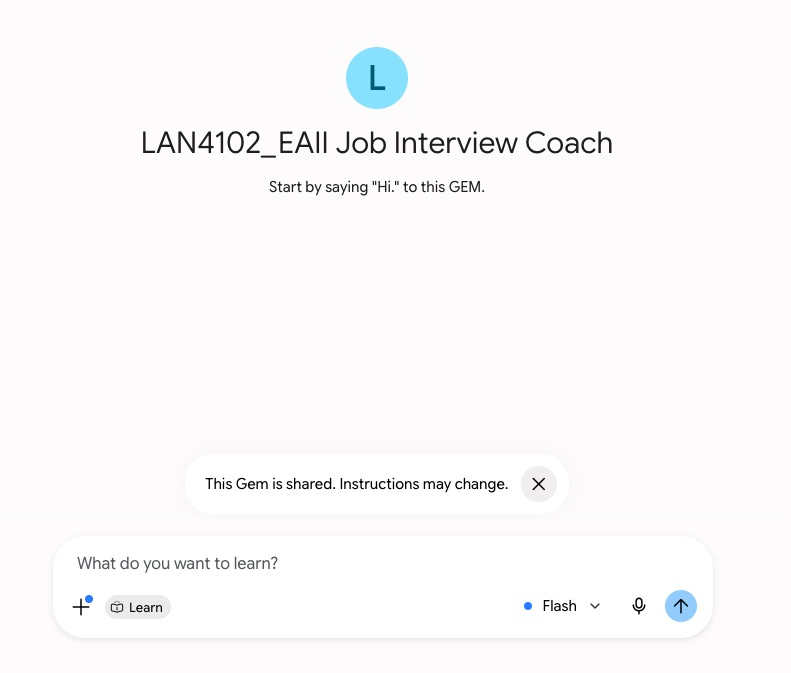
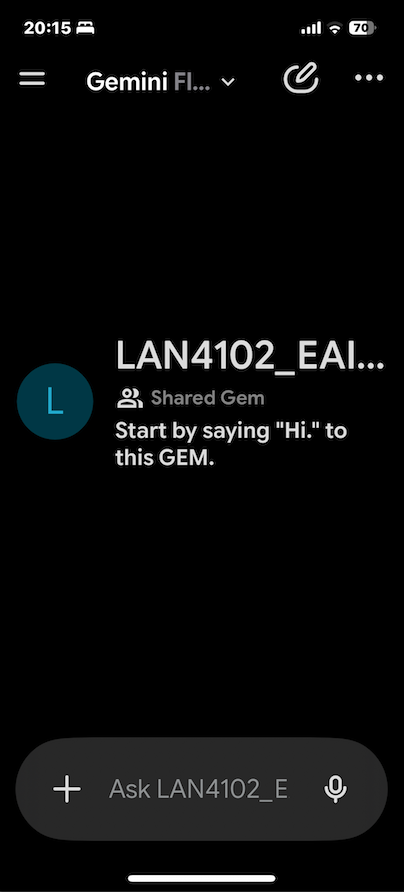
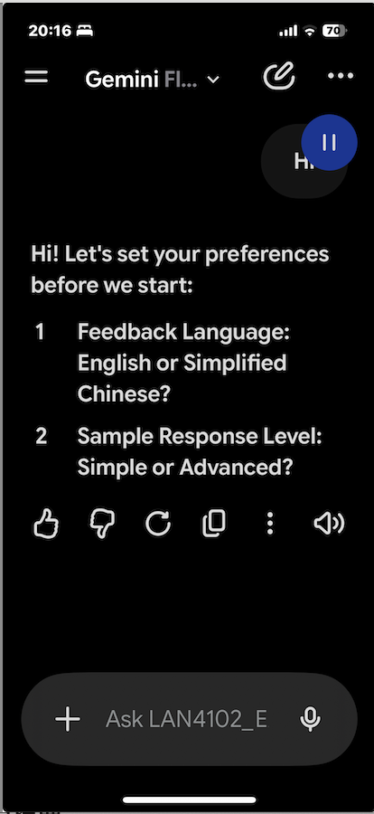
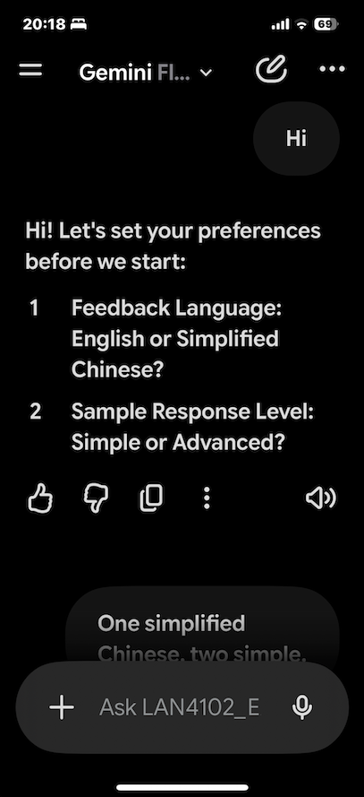
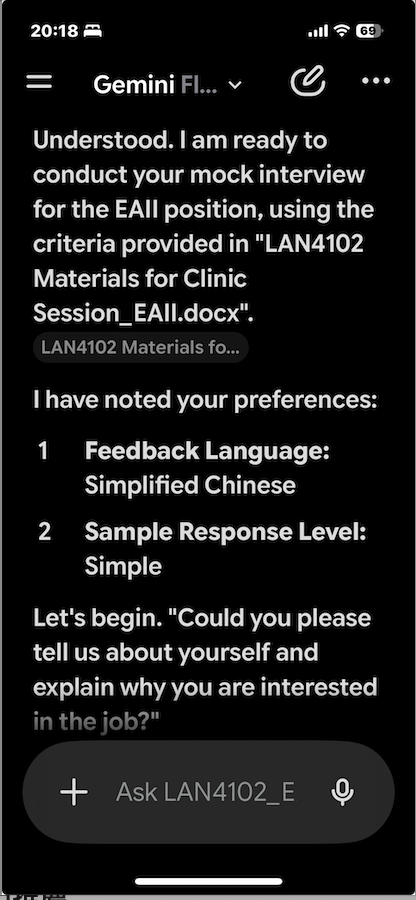

Welcome to your AI Interview Coach! This Gem is specifically customised to conduct a professional mock interview and provide structured feedback to prepare you for the coming EAII job interview task. Follow the steps below to set up and practise on your mobile phone.
欢迎使用您的 AI 面试教练！本应用专门定制用于进行专业的模拟面试，并提供结构化的反馈，帮助您为即将到来的 EAII 求职面试任务做好准备。请按照以下步骤在您的手机上设置并练习。
📱 在您的设备上安装 Gemini 应用
To use the live voice conversation features, you must use the official mobile app for your specific phone:
要使用实时语音对话功能，您必须使用适用于您手机的官方移动应用：
🍏 iPhone 用户
🤖 Android 用户
🔗 将教练添加到您的账户
On your mobile phone, click the link below to open your coach:
在您的手机上，点击以下链接打开您的教练：
👉 打开 LAN4102 EAII 求职面试教练
The link will open the Coach page in your phone's web browser.
该链接将在您手机的网络浏览器中打开教练页面。
Crucial Action: Type "Hi" and send this first message.
关键操作：输入 "Hi" 并发送此第一条消息。
⚠️ 注意：发送该第一条消息将把共享的教练永久"保存"到您的 Gemini 账户。一旦您这样做，它将正式显示在您的移动应用中！

🎙️ 开始您的语音练习
Open your downloaded Google Gemini Mobile App.
打开您已下载的 Google Gemini 移动应用。
Tap the Menu (three horizontal lines) in the top-left corner.
点击左上角的菜单（三条横线）。
Look under your list of Gems and tap LAN4102_EAII Job Interview Coach.
在您的应用列表中找到并点击 LAN4102 EAII 求职面试教练。
To Listen to Responses: Tap the Speaker icon next to any text the AI sends you.
听取回复：点击 AI 发送的文字旁边的扬声器图标。
For Live Spoken Practice (Recommended): Tap the Gemini Live waveform icon in the bottom-right corner next to the chat box. This starts a real-time, hands-free spoken conversation.
实时口语练习（推荐）：点击聊天框右下角的 Gemini Live 波形图标，开始实时免提口语对话。
📱 How to Use the Coach — Step-by-Step Visual Guide
📱 如何使用教练 — 分步图解指南




Refer to this video on YouTube for more information.
🎓 为您的模拟面试做好准备
Download "Clinic materials". Then, draft your answers before you start practising. The coach will start with this question: "Could you please introduce yourself in 2 minutes?" Feedback will be given afterwards. After that, the coach will pick exactly one question from each of the 4 categories below.
请先下载"Clinic materials"，然后在开始练习前列出您的回答要点。教练会以这个问题开始："请用两分钟介绍一下自己好吗？"回答后会收到反馈。之后，教练会从下方 4 个类别中各选1 个问题。
| Category / 类别 | Sample Interview Questions / 面试问题示例 |
|---|---|
| 1. Strength and Weaknesses 优点与缺点 |
|
| 2. Long/ Short-term Goals 长期 / 短期目标 |
|
| 3. Problem-solving 解决问题 |
|
| 4. Soft Skills 软技能 |
|
💬 您将获得的反馈
After each of your answers, the coach will give you concise, point-by-point spoken feedback. Here's exactly what to expect:
在您每次回答后，教练会提供简洁、按要点展开的口语反馈。以下是您将获得的内容：